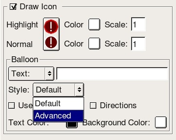
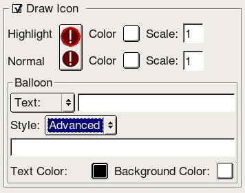
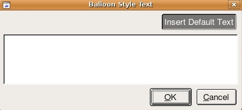

Google Earth Enterprise Documentation Home | Fusion resources and projects
Non-clickable icons
By default, any point icon that you configure in Fusion displays a pop-up balloon whenever EC users click it. You can configure your pop-up balloons to display information about the point. An example is shown below.
However, if you don't want an icon to display a pop-up balloon, you can use one of Fusion's Advanced options to make it a non-clickable icon. (Non-clickable icons are point icons that don't change when clicked.)

To create a non-clickable icon:
- Add a new point vector resource to a vector project. In the example below, the point vector resource is called USA_Cities.

- Assign filters, icon types, and minimum and maximum visibility display rule settings to the point layer.

- In the Balloon section, change the Style from Default to Advanced.

- Leave the Text field and the field that appears below Advanced empty.

- Click Advanced. The Balloon Style Text window appears.

- Click Insert Default Text.
- Remove all text except: $[description].
- Click OK twice to exit all windows.
- Save and Build the vector project.
- Build the 3D database, then publish to Fusion.
You can now view the non-clickable icon in EC.